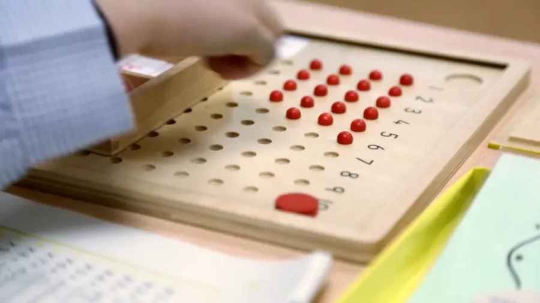
01
Metodología Científica CV-XXI
Un ambiente preparado y materiales científicamente elaborados, de inspiración Montessori, desde la Escuela Infantil hasta el primer ciclo de Primaria.
Cooperativa de enseñanza · Zamudio, Bizkaia
De los 10 meses a 2.º de Bachillerato, en un campus de 88.000 m² en el valle de Txorierri. Concertado, plurilingüe y aconfesional.
El colegio
El Colegio Vizcaya nació como cooperativa de enseñanza de madres y padres, sin ánimo de lucro. Hoy todas las familias son socias y las grandes decisiones se toman en asamblea.
Abrimos las aulas en 1970 con 600 alumnos. Desde entonces el proyecto ha crecido en edificios, idiomas y metodologías, pero el objetivo sigue siendo el mismo: que cada alumno gane autonomía y aprenda a convivir con los demás.
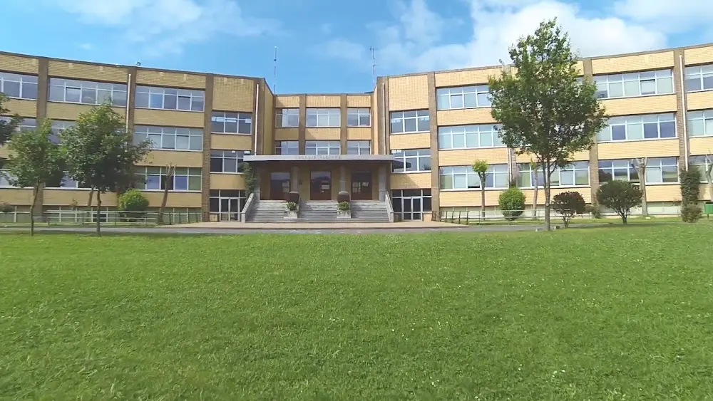
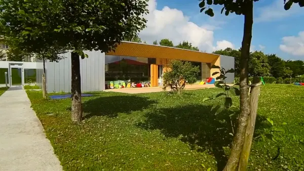
«El objetivo fundamental de nuestro quehacer educativo consiste, en colaboración con los padres, en ayudar a los alumnos a estructurar su personalidad, consiguiendo niveles progresivos de autonomía personal.»
Proyecto educativo del Colegio Vizcaya
Etapas educativas
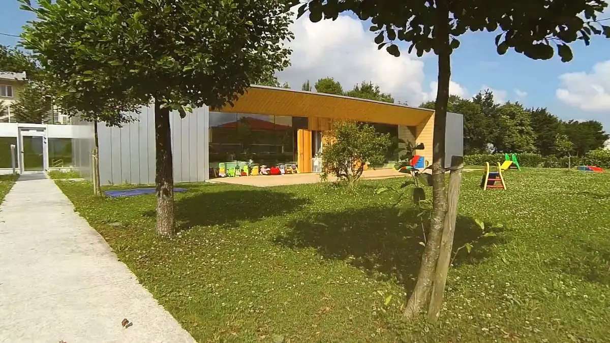
Tres edificios propios, comunicados entre sí y separados del resto del colegio, con siete aulas, comedor, sala de usos múltiples y jardín. El primero, de 1998, recibió el Premio de Arquitectura del Colegio Vasco-Navarro. Se puede empezar con 10 meses cumplidos. El aprendizaje parte de la Metodología Científica CV-XXI, de inspiración Montessori, en un ambiente de afecto y calma.
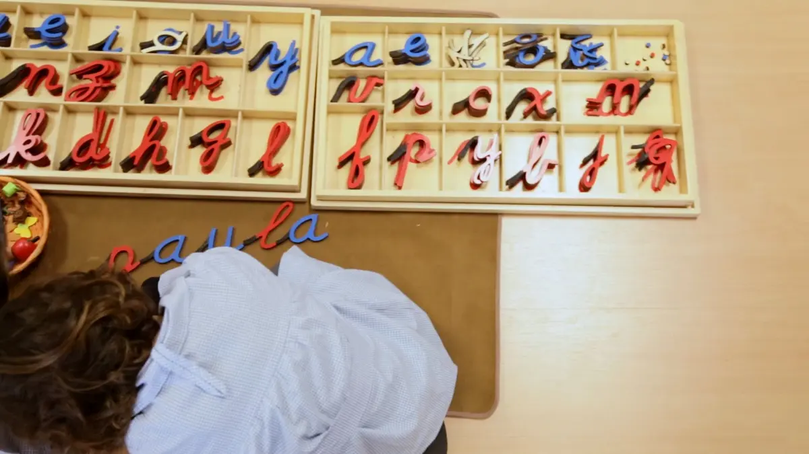
Aulas de edades mixtas (3, 4 y 5 años) preparadas como una «casa de niños», con materiales manipulativos y mucha autonomía. Patio semicubierto, jardín, dos salas de psicomotricidad, comedor propio y pabellón de deportes. Hacemos 30 sesiones semanales, cinco más de las que marca Educación.
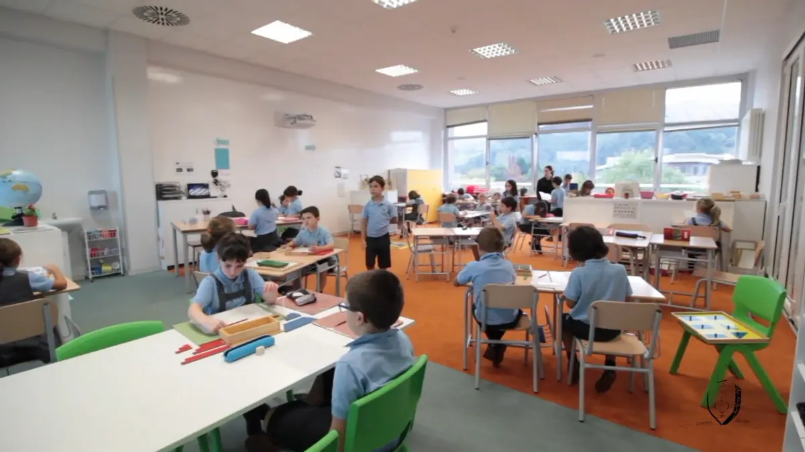
La etapa del razonamiento y la imaginación. En el primer ciclo sigue la Metodología CV-XXI; desde 3.º se trabaja en grupos cooperativos y en 5.º y 6.º cada alumno tiene su iPad y pizarra digital en el aula. El bosque, el huerto y los campos también son aula.
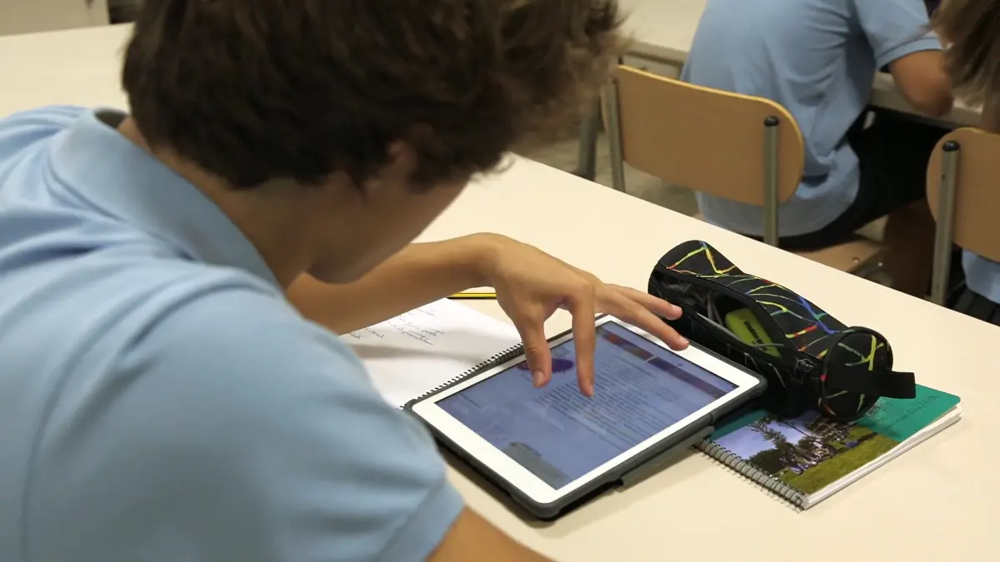
Hacemos 32 sesiones semanales en 1.º y 2.º y 33 en 3.º y 4.º, cuando la ley pide 30. Ese tiempo extra permite un cuarto idioma desde 1.º (francés o alemán) y más horas de música y artes. Cada materia tiene su aula y cada alumno su taquilla.
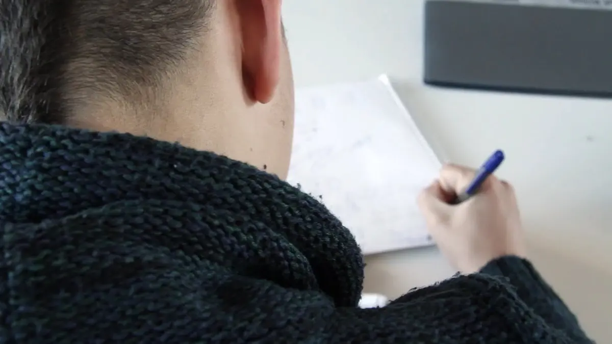
Dos modalidades: Ciencias y Tecnología, y Humanidades y Ciencias Sociales. Con ellas se accede a todas las carreras universitarias. Quien quiera puede sumar el título estadounidense de High School con el Bachillerato Dual. Orientación universitaria con ferias, visitas a empresas y charlas de antiguos alumnos.
Metodología
El alumno es el protagonista de su aprendizaje. Partimos del constructivismo y del aprendizaje significativo, respetamos el ritmo de cada uno y llevamos la información hacia la cultura.

Un ambiente preparado y materiales científicamente elaborados, de inspiración Montessori, desde la Escuela Infantil hasta el primer ciclo de Primaria.
Desde 3.º de Primaria se trabaja en grupos en los que todos participan por igual y cada uno responde de su parte. La comunicación y el liderazgo entran en el día a día.
En Secundaria y Bachillerato: clase invertida, aprendizaje basado en retos, proyectos multidisciplinares, robótica y emprendimiento.
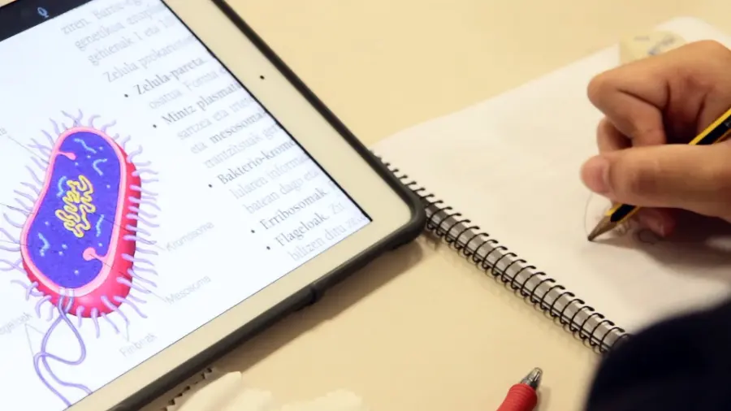
Desde 5.º de Primaria hasta Bachillerato cada alumno trabaja con su iPad. Fuimos de los primeros en implantarlo, en el curso 2014-15.
«Cuando un niño se siente seguro de sí mismo, deja de buscar aprobación en cada paso que da.»
Maria MontessoriEvaluamos desde Infantil para detectar a tiempo tanto dificultades como altas capacidades, con un modelo de diagnóstico propio. En 4.º de ESO y Bachillerato, orientación universitaria y profesional.
Idiomas
Queremos que el alumnado se comunique con soltura en las dos lenguas oficiales y en inglés. Desde 1.º de ESO se suma un cuarto idioma.
Desde el curso 2018-19, con Academica (EE. UU.), el alumnado puede cursar a la vez el Bachillerato español y el High School Diploma estadounidense, online y con tutor americano, a partir de 3.º de ESO.
Centro adherido al School Project de Cambridge (KET, PET, FCE y CAE) y centro examinador de IT Txartela. Gestionamos también la matrícula del Institut Français y te informamos de las convocatorias de alemán, EGA y EOI.
Intercambios con EE. UU. o Inglaterra en 6.º de Primaria y 1.º de Bachillerato, un mes de julio en Inglaterra y tres semanas en Irlanda con estancia en familia.
Instalaciones
Servicios
Como estamos fuera del casco urbano y el alumnado viene de muchos municipios, los servicios son parte del proyecto y los cuidamos igual que las clases.
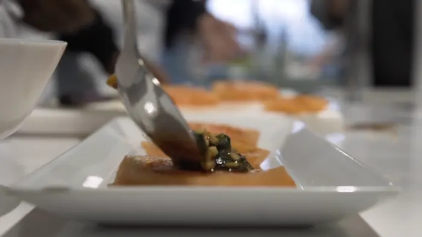
Más de 1.900 comidas al día preparadas en el colegio por personal propio. Menú único adaptado a alergias e intolerancias, sistema APPCC y auditoría sanitaria cada dos meses. Cada día dos alumnos ayudan en la cocina.
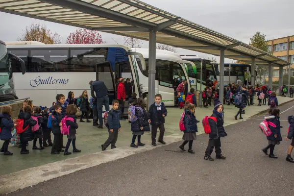
Tres turnos con 42 rutas por Bilbao, Txorierri, Margen Derecha, Barakaldo y Basauri-Galdakao. El recorrido medio dura entre 35 y 40 minutos y cada autobús lleva una persona encargada.
Busca tu paradaAula matinal desde las 8:30 para Infantil y primeros cursos de Primaria. Por la tarde, estudio dirigido para los mayores.
Una persona especializada atiende de 9:00 a 18:00 (viernes hasta las 17:00) y coordina las alergias con cocina. Desfibrilador y personal formado.
Encuentros presenciales y consultas privadas por correo sobre autonomía, conducta, aprendizaje y hábitos saludables. Este mes: las rabietas en la primera infancia.
Más de 200 m² y 25.000 volúmenes en seis zonas: consulta, estudio en grupo e individual, primeros lectores, ordenadores y radio. Abierta en el recreo de la comida.
Días lectivos de 9:00 a 16:45. En julio, mañanas de la primera quincena. Cerrada en Navidad, Semana Santa y agosto.
Transporte escolar
Escribe tu barrio o municipio y te enseñamos las líneas y paradas del curso 2026-27.
Prueba con tu barrio: verás la línea, el turno, la hora de salida y todas sus paradas.
Deporte y extraescolares
Fútbol con convenio de colaboración con el Athletic Club, piscina propia y pista de atletismo. Inscripción en junio para todo el curso, de septiembre a mayo.
Inscripción del 8 al 21 de junio. Las actividades empiezan el 16 o el 30 de septiembre y terminan el 28 de mayo.
Turno de autobús propio para extraescolares, con salida a las 18:05.
Socios y antiguos alumnos pueden alquilar el polideportivo, el pabellón y las pistas en horas libres.
Verano en el colegio
Propuestas para todas las edades, abiertas también a alumnado de otros centros. La inscripción se abre a mediados de abril.
Última semana de junio incluida en el recibo y dos semanas más en julio, con comida, siesta y merienda.
Proyectos semanales en inglés con canciones, teatro y juegos. Fiesta de espuma y hinchables de agua.
Colonias en euskera con un tema por semana, manualidades, teatro y exposición de proyectos.
Fútbol, baloncesto, gimnasia rítmica, patinaje, multideporte, tenis y pádel, con una hora de piscina al día.
Cocina, robótica, teatro o pintura por la mañana y proyecto semanal en inglés por la tarde.
Hip hop, commercial dance, dancehall y afrobeat, con piscina a mediodía.
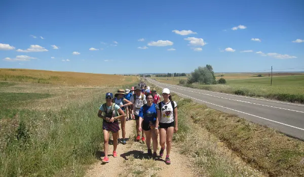
1.º a 4.º ESOCinco días a pie en la última semana de junio, con etapas distintas para cada curso.
IrriSarri Land en Igantzi (Navarra), en euskera, y NaturAsturias en Celorio, en inglés.
Tres semanas de julio en St. Leo's College (Carlow) con familia, 45 horas de clase y excursiones.
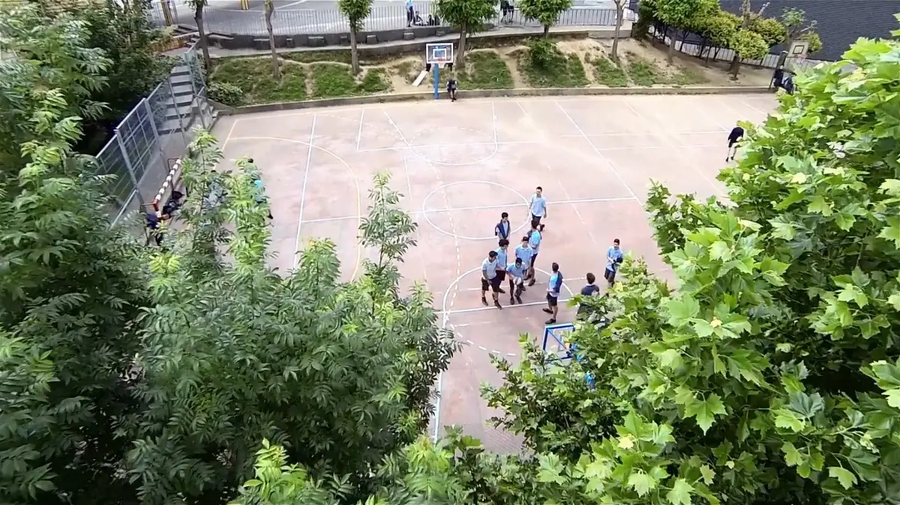
Compromiso
Trabajamos la Agenda Escolar 2030 con toda la comunidad educativa, y la solidaridad forma parte de la rutina del colegio.
Trayectoria
Entre 2008 y 2014, el ranking de El Mundo situó al colegio cada año entre los cinco mejores colegios privados de España.
Admisiones
Rellena el formulario de preinscripción para el curso 2027-28. Así conocemos vuestro interés y os avisamos de cada paso.
Formulario de preinscripciónJornada de puertas abiertas el sábado 12 de diciembre para familias de 1 y 2 años. Las familias nuevas tienen además una visita guiada por las instalaciones.
Inscribirse a la jornadaEl Gobierno Vasco abre el plazo al comienzo del año, normalmente entre enero y febrero. La solicitud se hace online o en el colegio, y te avisamos cuando se abra.
Se publican las listas de solicitantes y después las de admitidos, según el baremo oficial y los criterios de nuestro Consejo Escolar.
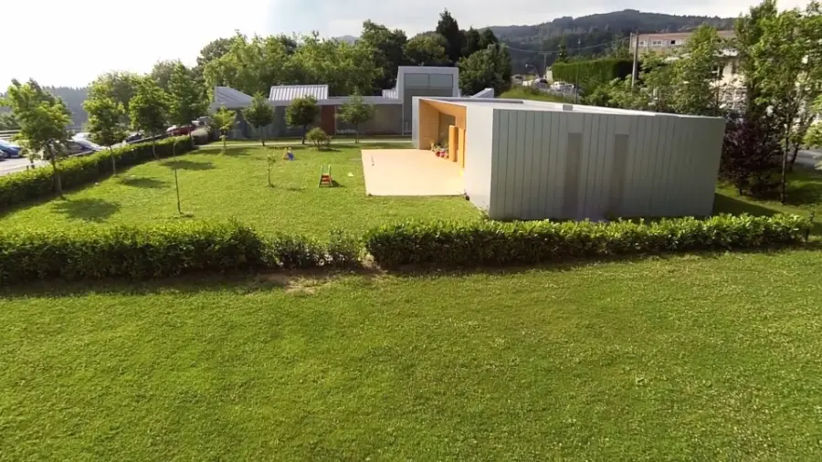
Ate irekien jardunaldia
Para familias de alumnado de 1 y 2 años. Plazas con inscripción previa.
Reservar plazaActualidad
Contacto
Asistente del Colegio Vizcaya
IA en línea · castellano, euskera, English